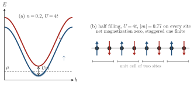
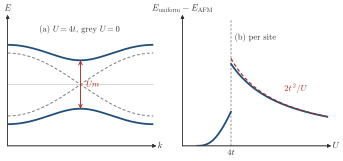
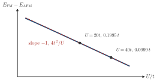

Advanced Quantum Materials 2027 · All lectures · Lecture notes
Session 6. Classical Magnetism and Magnons
6.4 Exchange splitting and antiferromagnetic order in numerical mean-field theory
Let us now see the method of Section 6.3 in a real calculation. First we take the one-dimensional chain (6.1) with a unit cell of one site at 20% filling, and we solve it self-consistently. The resulting band structure shows an exchange splitting. The spin-up band, which is occupied up to the chemical potential, is at lower energy than the spin-down band, which is empty at this filling. The splitting between them is called the exchange splitting, and it grows with \(U\). Only spin-up states are occupied, so this is a fully polarized ferromagnetic solution with \(m\neq 0\).
Now we take a unit cell with two sites, and we work at half filling. At \(U=0\) there are two bands, one per site in the cell, and they cross at one point, so the system is metallic. When we turn on \(U>0\) a mean-field gap opens, and in real space the two sublattices get opposite spin polarization, with one site mostly up and its neighbor mostly down. The net magnetization is zero, but the staggered magnetization is not, and this is antiferromagnetic order. As always when a mean-field gap opens, it lowers the total electronic energy with respect to the state without a gap, because the states that the gap pushes down in energy are the occupied ones. Schematic Schematic 6.1 shows the two solutions.

Notebook check-in: session6.ipynb, “(Reminder) Bandstructure of a tight binding chain with two sites” and “(Exercise) Magnetic order driven by interactions in a chain”
Start from the band structure of the two-site chain without interactions, which is the metallic case with a crossing. Then turn on \(U\) and see how the mean-field gap opens and how the spin pattern in real space becomes antiferromagnetic, which reproduces the exchange splitting of (6.2) directly. The ferromagnetic case with one site per cell at 20% filling, from the same section, is the companion calculation.
6.5 Competition between the ferromagnet and the antiferromagnet
The Hubbard chain (6.1) has both a uniform self-consistent solution, with one site per cell and without the gap of the doubled cell, which is the paramagnet below \(U\approx 4t\) and a fully polarized ferromagnet above it, where the spin-up band is full and the spin-down band is empty, and an antiferromagnetic one, with two sites per cell, insulating and gapped, at the same filling and the same \(U\). Both are real fixed points of the self-consistency loop. Only one of them can be the true ground state, and we decide which one by comparing total energies. Here the gapped antiferromagnetic solution always has the lower energy. Opening a gap pushes the occupied single-particle energies down, so the insulating configuration has a lower total energy than the gapless ferromagnetic one for every \(U>0\) that we can reach numerically in this half-filled chain.
Let us follow how large this energy difference is as a function of \(U\). At \(U=0\) the two configurations are the same, so the energy difference is zero. When \(U\) grows from zero the gap opens and the energy difference grows with it. However, when \(U\) keeps growing, the energy difference starts to decrease again, which is not what one would expect. In the limit \(U\to\infty\), which is the same as the limit where the kinetic energy can be neglected, the two configurations become degenerate. Numerically, this energy difference follows a \(1/U\) form. In Section 6.8 we will derive this exact \(1/U\) scaling analytically from a completely independent calculation, which is a real cross-check between the mean-field numerics and a many-body perturbative treatment.

At large \(U\) the energy difference \(E_\text{FM}-E_\text{AFM}\) of the half-filled chain, per cell of two sites, follows a \(1/U\) law. What happens to it when \(U\) doubles from \(20t\) to \(40t\)?
Show the answers
- A. ✗ False
This is false. With \(J=4t^2/U\) and \(t=1\) we get \(0.2\) at \(U=20t\) and \(0.1\) at \(U=40t\). Doubling would give \(0.4\) at \(U=40t\), while the two states become degenerate at \(U\to\infty\).
- B. ✓ True
This is true. A \(1/U\) law gives half the value when \(U\) doubles. It comes from \(J=4t^2/U\) of Section 6.8, which is \(0.2t\) at \(U=20t\) and \(0.1t\) at \(U=40t\) for the cell of two sites. A mean-field calculation gives \(0.1995t\) and \(0.0999t\).

The energy difference \(E_\mathrm{FM}-E_\mathrm{AFM}\) per cell of two sites from the mean-field chain, on logarithmic axes, with the line \(4t^2/U\). The two points are \(U=20t\) and \(U=40t\). - C. ✗ False
This is false. A division by four needs a \(1/U^2\) law. The product \(U(E_\text{FM}-E_\text{AFM})\) is close to \(4t^2\) at large \(U\), which gives \(0.2t\) and \(0.1t\) for the two values, and not \(0.05t\).
Try it. In the cell, Us runs from 20 to 60. The plot of \(E_\text{FE}-E_\text{AF}\) falls as \(1/U\), and the points of the log-log plot follow a line of slope \(-1\). The product \(U(E_\text{FE}-E_\text{AF})\) is close to \(4t^2\) for the cell of two sites.